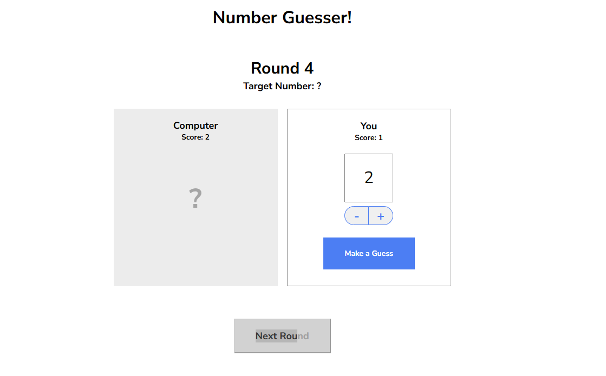
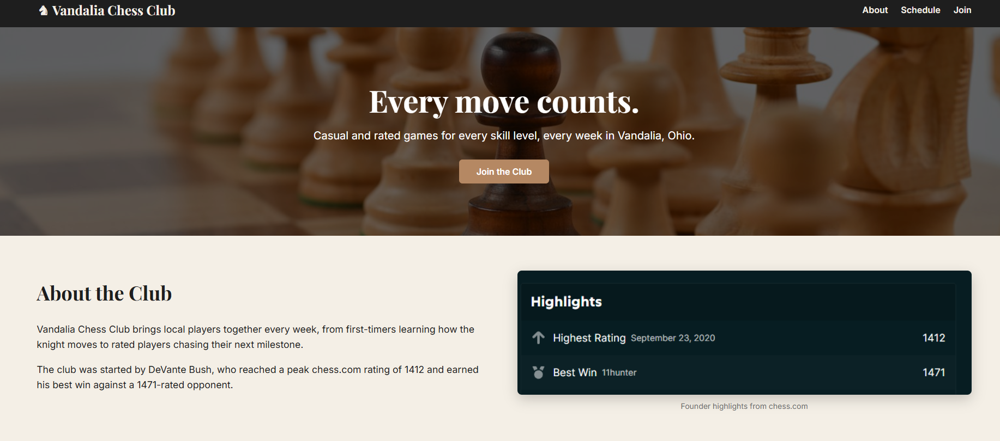
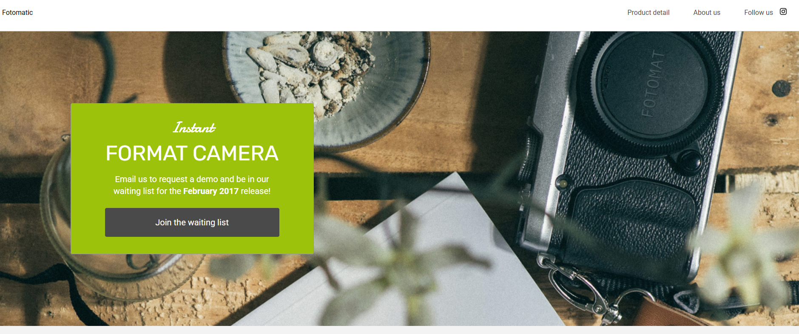

Number Guesser
A browser game where you play against the computer to guess a secret number from 0 to 9. I wrote the game logic that picks the target, compares guesses, and keeps score.
- HTML
- CSS
- JavaScript
Full-Stack Developer in training
I'm working through Codecademy's Full-Stack Engineer path. Here are a few projects I've built along the way.

A browser game where you play against the computer to guess a secret number from 0 to 9. I wrote the game logic that picks the target, compares guesses, and keeps score.

A responsive site for a made-up chess club in Vandalia, Ohio. It uses Flexbox and two breakpoints so it works on desktop, tablet, and phone.

A debugging project. Codecademy handed me a broken landing page for a made-up instant camera, and I tracked down the HTML and CSS bugs using browser dev tools.